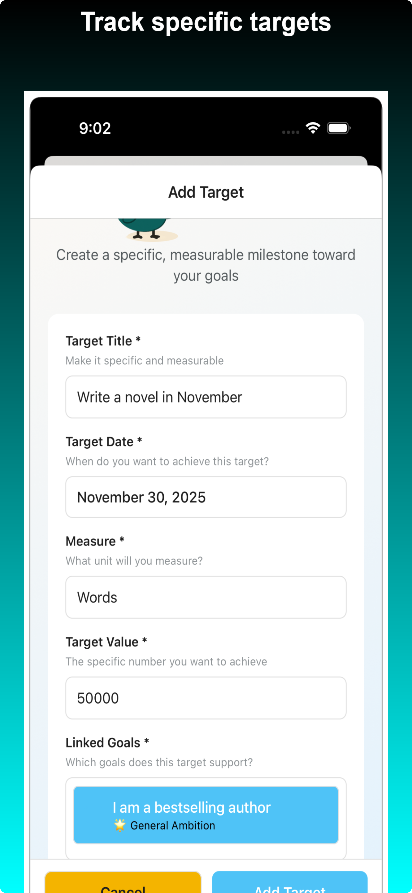
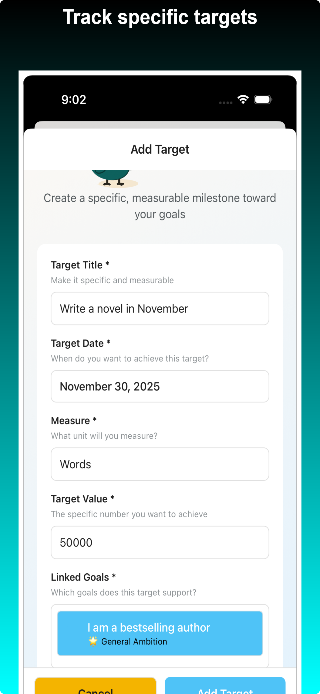

üéâ Actenda 1.0.0 Now Available on the App Store!
Major Launch: Productivity Reimagined
We’re thrilled to announce the official launch of Actenda 1.0.0 on the Apple App Store! As our flagship first app, Actenda brings a fresh approach to goal-setting, daily action, and real progress tracking—right inside your iOS calendar.
Actenda is designed for founders, creatives, builders, and students who want routines that produce real results—not just performative productivity. If you’re ready to stop busywork and start seeing measurable output every day, Actenda is for you.
What Makes Actenda Different
- Output over busywork: Every action ties to a goal and a measurable result you can review nightly.
- Your calendar is the source of truth: Plan your day by placing focused blocks right on your device’s native calendar for seamless iCloud sync.
- Honest daily rhythm: Start with a quick Morning Resolution and end with a clear Evening Review to stay aligned, accountable, and learning.
Plan Your Day Where It Actually Happens
- Schedule blocks directly in your iOS Calendar (with conflict detection)
- Drag, adjust, and reschedule without breaking your flow
- Works offline; syncs when you’re back online
Build Routines That Produce
- Goals → Actions → Outputs: define what “done” really means
- 30+ practical templates and challenge packs to jump-start momentum
- Progress tracking and streaks that reflect real output, not just checkmarks
Delightful by Design
- Thoughtful animations and haptics make progress feel great
- Dark mode and accessibility built-in
- Premium themes with seasonal drops keep things fresh (Premium)
Privacy and Control
- Offline-first with local storage
- Your calendar data stays on your device unless you choose to sync via iCloud
- Export/import your data anytime (Extended Features or Premium)
Pricing and Tiers
- Free: Core features (goals, actions, basic templates)
- Extended Features (One-time Unlock): Unlock more schedule templates and advanced analytics
- Premium: Everything in Extended plus EV analysis and themes
Who It’s For
Founders, creatives, builders, students. Anyone who wants routines that produce real results instead of performative productivity.
Subscription Details
Payment will be charged to your Apple ID. Subscriptions auto-renew unless canceled at least 24 hours before the end of the period. Manage or cancel in your App Store account settings after purchase. Pricing may vary by region.
Support
Questions or feedback? Email support@actenda.com.
Terms of Use: Apple Standard EULA
 
